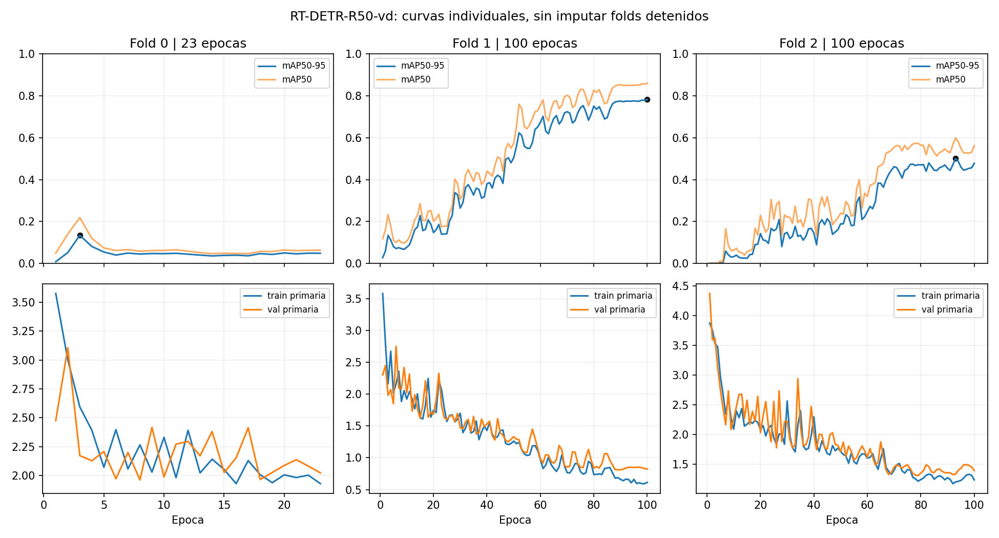

Decision: D_EVIDENCIA_INSUFICIENTE_PARA_AUTORIZACION_LOCAL
| Fold | Mejor mAP50-95 | Mejor epoca | Epocas |
|---|---|---|---|
| 0 | 0.133757 | 3 | 23 |
| 1 | 0.782610 | 100 | 100 |
| 2 | 0.500988 | 93 | 100 |
Las curvas individuales evitan cambiar la poblacion de folds al finalizar el fold 0. Los originales se conservan.

Sin telemetria de gradientes/LR por paso ni predicciones crudas no se demuestra la causa de la inestabilidad. APROBAR autoriza solo HPO original, no un cambio metodologico ni independencia biologica.
{
"decision": "D_EVIDENCIA_INSUFICIENTE_PARA_AUTORIZACION_LOCAL",
"tables": {
"folds": [
{
"fold": 0,
"epochs": 23,
"best_epoch": 3,
"best_mAP50_95": 0.1337566803548636,
"last_mAP50_95": 0.048052059,
"best_before60_observed": 0.13375668,
"at60_observed": null,
"early_stopping_consistent": true,
"n_train": 151,
"n_val": 76,
"metrics_at_best": {
"map50": 0.21854477,
"map50_95": 0.13375668,
"precision": 0.17899223,
"recall": 0.58916479,
"f1": 0.27456866
},
"losses": {
"train_loss": {
"first": 3.5756028,
"at_best": 2.5948355,
"last": 1.9310152,
"min": 1.9303865,
"max": 3.5756028
},
"val_loss": {
"first": 2.4762465,
"at_best": 2.1732684,
"last": 2.0236545,
"min": 1.9634988,
"max": 3.1064027
},
"optimization_loss_total": {
"first": 46.523714,
"at_best": 29.690837,
"last": 22.262101,
"min": 20.620319,
"max": 46.523714
},
"train/vfl_loss": {
"first": 0.3392235,
"at_best": 1.1251002,
"last": 1.4865043,
"min": 0.3392235,
"max": 1.8310476
},
"train/bbox_loss": {
"first": 1.2757436,
"at_best": 0.45996413,
"last": 0.12556738,
"min": 0.089195711,
"max": 1.2757436
},
"train/giou_loss": {
"first": 1.9606357,
"at_best": 1.0097711,
"last": 0.31894349,
"min": 0.2448884,
"max": 1.9606357
},
"val/vfl_loss": {
"first": 0.60175595,
"at_best": 1.0620182,
"last": 1.6800969,
"min": 0.60175595,
"max": 2.0909999
},
"val/bbox_loss": {
"first": 0.71554738,
"at_best": 0.39905066,
"last": 0.11656275,
"min": 0.07537943,
"max": 0.71554738
},
"val/giou_loss": {
"first": 1.1589432,
"at_best": 0.71219953,
"last": 0.22699481,
"min": 0.14160115,
"max": 1.1589432
}
},
"zero_detection_metric_epochs": []
},
{
"fold": 1,
"epochs": 100,
"best_epoch": 100,
"best_mAP50_95": 0.7826096947114208,
"last_mAP50_95": 0.78260969,
"best_before60_observed": 0.67371006,
"at60_observed": 0.67371006,
"early_stopping_consistent": true,
"n_train": 151,
"n_val": 76,
"metrics_at_best": {
"map50": 0.86064581,
"map50_95": 0.78260969,
"precision": 0.79502631,
"recall": 0.83673034,
"f1": 0.81534539
},
"losses": {
"train_loss": {
"first": 3.5840315,
"at_best": 0.61284469,
"last": 0.61284469,
"min": 0.59251277,
"max": 3.5840315
},
"val_loss": {
"first": 2.3039128,
"at_best": 0.82255304,
"last": 0.82255304,
"min": 0.81001766,
"max": 2.7521993
},
"optimization_loss_total": {
"first": 46.9466,
"at_best": 7.7175251,
"last": 7.7175251,
"min": 7.5218997,
"max": 46.9466
},
"train/vfl_loss": {
"first": 0.35775948,
"at_best": 0.46969171,
"last": 0.46969171,
"min": 0.35775948,
"max": 1.9081333
},
"train/bbox_loss": {
"first": 1.3475737,
"at_best": 0.039379822,
"last": 0.039379822,
"min": 0.038122967,
"max": 1.3475737
},
"train/giou_loss": {
"first": 1.8786983,
"at_best": 0.10377317,
"last": 0.10377317,
"min": 0.091480047,
"max": 1.8786983
},
"val/vfl_loss": {
"first": 0.7054332,
"at_best": 0.55803517,
"last": 0.55803517,
"min": 0.55803517,
"max": 2.2243237
},
"val/bbox_loss": {
"first": 0.59700682,
"at_best": 0.084483947,
"last": 0.084483947,
"min": 0.073252498,
"max": 0.59700682
},
"val/giou_loss": {
"first": 1.0014728,
"at_best": 0.18003393,
"last": 0.18003393,
"min": 0.16383191,
"max": 1.0014728
}
},
"zero_detection_metric_epochs": []
},
{
"fold": 2,
"epochs": 100,
"best_epoch": 93,
"best_mAP50_95": 0.5009877346034163,
"last_mAP50_95": 0.47795798,
"best_before60_observed": 0.31657358,
"at60_observed": 0.24731586,
"early_stopping_consistent": true,
"n_train": 152,
"n_val": 75,
"metrics_at_best": {
"map50": 0.59949472,
"map50_95": 0.50098773,
"precision": 0.56969318,
"recall": 0.55211701,
"f1": 0.56076741
},
"losses": {
"train_loss": {
"first": 3.8715308,
"at_best": 1.1970536,
"last": 1.2318097,
"min": 1.168015,
"max": 3.8715308
},
"val_loss": {
"first": 4.3699004,
"at_best": 1.3288455,
"last": 1.389516,
"min": 1.3055267,
"max": 4.3699004
},
"optimization_loss_total": {
"first": 53.095809,
"at_best": 13.233714,
"last": 12.783733,
"min": 12.783733,
"max": 53.095809
},
"train/vfl_loss": {
"first": 0.34614105,
"at_best": 0.95431246,
"last": 1.01357,
"min": 0.0043125573,
"max": 2.0754508
},
"train/bbox_loss": {
"first": 1.3993047,
"at_best": 0.071118208,
"last": 0.06533835,
"min": 0.06533835,
"max": 1.3993047
},
"train/giou_loss": {
"first": 2.126085,
"at_best": 0.17162292,
"last": 0.15290131,
"min": 0.15290131,
"max": 2.2456792
},
"val/vfl_loss": {
"first": 0.48669031,
"at_best": 1.0075458,
"last": 1.0717565,
"min": 0.0010700236,
"max": 2.4742161
},
"val/bbox_loss": {
"first": 1.5578548,
"at_best": 0.10344647,
"last": 0.10221121,
"min": 0.084869108,
"max": 1.5578548
},
"val/giou_loss": {
"first": 2.3253553,
"at_best": 0.21785327,
"last": 0.21554826,
"min": 0.20608053,
"max": 2.3253553
}
},
"zero_detection_metric_epochs": [
1,
2,
3
]
}
],
"score_mean": 0.4724513698899003,
"score_sd": 0.3253664113629352,
"numeric_integrity": true,
"variable_fold_count": {
"at_epoch1": 3,
"after23": 2,
"last_available_fold_mean": 0.630283835,
"warning": "La figura original cambia de 3 a 2 folds; no equivale al promedio CV de los tres mejores checkpoints."
},
"truncated100_curve_mean_before60": 0.3746801066666667,
"truncation_is_not_60_epoch_training": true,
"learning_rates_logged": false,
"gradient_norms_logged": false,
"overfit": "No demostrado: las perdidas totales train y validation bajan; VFL usa targets de calidad dependientes de IoU y no exige monotonia."
},
"scope": "Adjuntos y codigo real; no acceso al disco de PC-03. La coherencia numerica es compatible con B. Falta validar localmente checkpoints, datos y cola.",
"confirmed": [
"No NaN/inf en 223 epocas, 3 folds",
"Early stopping23=best3+20",
"Figura media cambia de3a2 folds desdeepoca24"
],
"missing": [
"checkpoint entrenado y recibos originales",
"manifiestos e imagenes locales",
"estado actual cola y Optuna",
"metadatos originales e identidad efectiva"
],
"training_executed": false,
"human_approval_registered": false
}# Auditoría técnica RT-DETR-R50-vd — PC-03, ronda r50vd_01 Fecha: 2026-11-04. Alcance: `metrics.json`, `fold_metrics.csv`, `history.csv`, `config.yaml` y figuras aportadas; código real aprobado `b706f176c8e308969fd3a885d66045ffea027c7e`; adaptador usado por el baseline SHA256 `e62e47fdc4cdbe6648d0830a8efac9701ab04ae82b77757d4a0880ec73381df7`; fuente oficial `df2a96c8c3a098567a1149bf0248da6efe6d495d`. No se accedió al disco de Windows ni se ejecutó entrenamiento en esta auditoría. ## 1. Diagnóstico Las 223 filas del historial son finitas, con épocas contiguas y sin folds/épocas repetidos. Concuerdan con el resumen y los resultados por fold. Media de los tres mejores checkpoints: **0,4724513699 mAP50–95**; desviación muestral **0,3253664114**, no error estándar. La dispersión es grande; una media sola no representa bien este baseline. Existe un defecto confirmado de presentación: `utils.visualization._curve` y `plot_metrics_per_epoch` promedian los folds disponibles por época. Al parar fold 0 en la época 23, la línea cambia de tres folds a dos. Su último valor cercano a **0,63028** corresponde a los folds 1 y 2 en la época 100; NO es el resultado CV de los tres mejores checkpoints. La media numérica original **0,47245** es correcta. Se generaron figuras nuevas por fold y se preservaron las originales; no se rellenaron épocas inexistentes. ## 2. Análisis por fold | Fold | TRAIN / VAL | Mejor mAP50–95 | Mejor mAP50 | Precisión | Recall | Mejor época / ejecutadas | |---|---|---:|---:|---:|---:|---| | 0 | 151 / 76 | 0,1337566804 | 0,21854477 | 0,17899223 | 0,58916479 | 3 / 23 | | 1 | 151 / 76 | 0,7826096947 | 0,86064581 | 0,79502631 | 0,83673034 | 100 / 100 | | 2 | 152 / 75 | 0,5009877346 | 0,59949472 | 0,56969318 | 0,55211701 | 93 / 100 | **Fold 0:** mAP termina en 0,04805. Su parada es coherente: 3 + paciencia 20 = 23. Train loss primaria baja de 3,57560 a 1,93102; val loss primaria de 2,47625 a 2,02365. VFL aumenta, mientras bbox/GIoU bajan. VFL usa objetivos de calidad derivados del IoU del matching; su escala cambia con las predicciones. Su aumento aislado no prueba corrupción ni gradientes explosivos. La baja precisión confirma mal desempeño en ese fold, pero sin predicciones crudas no se contabiliza su causa ni se demuestra colapso. Es posible que early stopping lo haya detenido durante una fase transitoria, pero **no hay evidencia de que se habría recuperado**. **Fold 1:** continúa mejorando hasta la época 100. mAP50–95: 0,26374 en época 30, 0,67371 en 60, 0,78261 en 100. Train loss baja de 3,58403 a 0,61284; val loss de 2,30394 a 0,82255. **Fold 2:** mAP50/precisión/recall son cero en las tres primeras épocas; luego aprende. Eso no demuestra ausencia de cajas predichas sin examinar sus salidas. mAP50–95 de 0,24732 en época 60, máximo de 0,50099 en 93 y último 0,47796. Train loss baja de 3,87150 a 1,23181; val loss de 4,36989 a 1,38952. Necesita aprendizaje tardío. Las pérdidas mostradas suman las componentes primarias VFL+bbox+GIoU; el objetivo optimizado incluye además auxiliares/denoising. TRAIN usa augmentation y VAL el modelo EMA, de modo que su diferencia no es una medida pura de generalización. No hay una divergencia clásica demostrada de loss train decreciente y loss val creciente. Tampoco puede descartarse sobreajuste: no se aportaron métricas de inferencia sobre TRAIN, test independiente ni normas históricas de gradientes. El gran gap de rendimiento entre folds demanda revisar composiciones y fuentes, no atribuirlo a la diferencia de una imagen. ## 3. Errores críticos y límites de evidencia **Confirmado:** defecto de la curva media al cambiar la población de folds. Se corrige en el informe externo, sin modificar CSV, datos, configuración o pesos. **No demostrado:** CSV corrupto, divergencia numérica, fallo de early stopping, fuga de datos, grafo incompatible, colapso de predicciones o restauración incorrecta de los pesos entrenados. Los dos últimos necesitan comprobación local de checkpoints/predicciones. **Verificado en CPU con el código y los pesos oficiales:** carga estricta del checkpoint COCO80 completo, seguida de sustitución de las cabezas de clasificación/denoising para `fruit1`; 42.729.027 parámetros. PResNet depth50 variante d, FrozenBatchNorm, `freeze_at=-1`, tamaño fijo640; criterio y matching oficiales. Datos RTDETRDataset de Ultralytics8.4.170, RGB/255, cajas normalizadas cxcywh y etiqueta fruit0. Las métricas usan matching de cajas y DetMetrics a IoU0,50:0,95; no mAP de clasificación. El campo heredado `initialization.rtdetr_backend: ultralytics_resnet50` no describe por sí solo el grafo ejecutado. El adaptador y el payload oficial son la autoridad comprobable; se documenta esa etiqueta sin cambiar la configuración ni el fingerprint. Los grupos reales del optimizador tienen head LR0,001 y backbone LR0,0001. Este backbone no tiene bias entrenable; no se demostró un defecto de ratio del backbone durante el warmup. La receta difiere de la oficial COCO (head LR0,0001/backbone0,00001, beta1 0,9 y clipping0,1): el proyecto usa beta1 0,937, clipping10 y warmup de bias desde0,1. Son diferencias declaradas de receta, e hipótesis sobre inestabilidad, no prueba causal de un bug. No se cambiaron. **Pendiente local indispensable:** hashes de imágenes/anotaciones reales y derivados; correspondencia manifiesto/folds; recibos e integridad de best y estados de optimizador; carga estricta de los pesos entrenados; igualdad best.pt con best_state guardado; configuración/código/QA compatibles; estado actual de la cola y Optuna. El ejecutor verifica esto sin inferencia ni entrenamiento. El ejecutor revisa duplicados exactos de archivo/píxeles y similitud dHash entre particiones; usa metadatos explícitos de planta/hoja/sesión si existen. La ausencia de esos metadatos impide certificar independencia biológica. Una similitud perceptual aislada no se convierte en fuga confirmada. OFF/_off permanecen excluidos. Verificar la integridad del contenido de TEST no equivale a evaluarlo; no se ejecuta inferencia ni se selecciona con TEST. ## 4. Evaluación del HPO Protocolo existente: **15 trials COMPLETE+PRUNED, tres folds internos de outer TRAIN, mAP50–95, máximo60 épocas, paciencia20, TPE multivariate/group startup5, MedianPruner startup5/warmup8/interval1, FP16, batch16**. Espacio R50: AdamW fijo, LR logarítmico1e-5..1e-3, ratio backbone0,1 fijo, weight_decay logarítmico1e-5..1e-3. La preocupación por aprendizaje lento está respaldada: los mejores resultados de folds1/2 aparecen en épocas100/93. El máximo observado antes de60 es 0,67371 y 0,31657 respectivamente. La media de los máximos truncados a60 de los tres historiales sería **0,37468011**. **Esto NO simula un entrenamiento real de60 épocas**: el scheduler coseno depende del horizonte total y seguiría otra trayectoria. El reporter usa pasos globales `fold_index * max_epochs + epoch_zero`. El warmup8 del pruner no se reinicia por fold; fold1/2 pueden quedar sujetos a pruning desde el comienzo. Esta política puede favorecer aprendizaje rápido. No se ha demostrado que todos los nuevos HP necesiten100 épocas ni que aumentar paciencia arregle fold0. **Recomendación:** conservar el estudio primario original60/paciencia20/pruning para mantener su protocolo y documentar su presupuesto. Si se quiere investigar sensibilidad100 épocas o pruning más conservador, se propone **otra ronda y fingerprint**, presupuesto explícito y comparación con igual horizonte. No mezclar trials, escoger nuevas reglas con TEST, ni cambiarlo automáticamente ahora. No ejecutar robustez. ## 5. Decisión **B — APTO CON OBSERVACIONES respecto a las tablas y al código examinados.** No hay defecto invalidante demostrado por el mAP bajo. **D — EVIDENCIA INSUFICIENTE para autorizar operativamente el HPO desde la nube**, porque los checkpoints entrenados y los manifiestos actuales están únicamente en PC-03. No es un rechazo científico ni una solicitud de subirlos. El comando local resolverá esas comprobaciones. Si todas pasan y no hay conflictos confirmados emitirá `B_APTO_CON_OBSERVACIONES`; si faltan archivos emitirá D con sus rutas, y si detecta incompatibilidad/corrupción emitirá C. No aprobará ni entrenará. ## 6. Cambios y pruebas Se añade un ejecutor externo `tools/r50_audit/botrytis_r50_auditoria.py` con modos `audit` y `status`, copia exacta fijada del adaptador, pruebas y este informe. Ninguna modificación a `src`, configuraciones científicas, cola o backend usado para el baseline. Los diagnósticos de preparación del framework se redirigen a `r50/audit/<id>/prep`; no reescriben manifiestos originales. **35 pruebas automatizadas superadas**, sin entrenamiento GPU. También se comprobó `validate_protocol` contra el YAML real aportado. Casos: integridad de las tablas reales, columnas ausentes, NaN/inf/negativos, truncamientos, épocas repetidas/desordenadas, coherencia de aliases, firmas/recibos/pesos de fixtures sin entrenar, corrupción de checkpoint, ratio del optimizador, cola SQLite de solo lectura, consulta Optuna sin creación/migración, estados ausentes D, redirección de diagnósticos, conservación de los originales y carga CPU estricta del modelo oficial. Los fixtures de pesos entrenados son sintéticos para probar la lógica; no son evidencias del entrenamiento de PC-03. El modelo COCO real sí se carga estrictamente en la prueba CPU. No se ejecuta forward, backward ni optimizer.step en estas pruebas. ## 7. PC-03 El comando de instalación/auditoría publicado en esta entrega usa `git fetch` de un commit fijado y extrae solamente los dos scripts a una carpeta corta externa al checkout. Comprueba sus SHA256; no hace checkout/pull/reset, no modifica el código aprobado y no instala paquetes. Utiliza `.venv` de PC-03. Muestra las fases y la revisión de cada fold. El informe local se guarda en `%USERPROFILE%\r50\audit\<id>\AUDITORIA.html`, con `audit.json`, curvas separadas y diagnósticos auxiliares. `%USERPROFILE%\r50\audit\latest.json` indica el último informe. Los intentos anteriores se conservan. `status` consulta la cola y Optuna sin usar la GPU. ## 8. Aprobación y continuación Se respeta la instrucción: «Solo después de esa aprobación, proporciona o ejecuta el mecanismo oficial correspondiente». **No se entrega todavía un comando que apruebe o arranque HPO.** Tras resultado local A/B, revisar informe y escribir `APROBAR` explícitamente. La aprobación se registrará con operador y evidencia mediante `StudyQueue.approve`, que inserta una fila `reviews` y cambia únicamente el baseline de `PENDING_REVIEW` a `COMPLETE`; eso habilita su HPO dependiente. El siguiente ejecutor debe cargar el adaptador EXACTO e62e… e instalar sus hooks antes de `07_run_hpo_study`. Ejecutar 07 directamente sin esos hooks usaría otro backend y no es válido. Debe reutilizar cola/estudio, conservar el estado TPE, recuperar únicamente trials locales de procesos muertos verificables y los estados de cada fold; no repetir un baseline ni trials completos. El adaptador existente usa dos generaciones rolling de optimizador, más best. Esta política y la preservación de todos los checkpoints existentes deben quedar explícitas antes de autorizar ejecución; no se borra ningún checkpoint en la auditoría. ## 9. Evidencia posterior esperada HPO final: al menos un COMPLETE; COMPLETE+PRUNED=15; ningún RUNNING; errores/FAIL explícitos y resueltos o debidamente conservados; `study_summary.json`, `trials.csv`, `intermediate_values.csv` y resultados por trial/fold. Cola HPO `PENDING_REVIEW` es el cierre computacional normal supervisado y no validación definitiva. No se afirma test independiente ni modelo ganador. El presupuesto baseline100 frente HPO60 limita cualquier comparación causal de superioridad.